Settings
Design version: 1.0.0, direction B · Reach (2026-11-17). Planned design for release 1.0.0; the app is built to match it.
Settings holds what is set once. It opens from Q on iPhone, and from its own button on iPad and before the camera is ready. No page is more than two levels below Settings. Each switch carries its explanation under its title.
| Changed from 0.3.0 | Why |
|---|---|
| Manual Controls switch removed | It is a shooting control and now has its camera button (issue 77). |
| Search added | The list is long; any setting on any page can be found by name. |
| Formats shows RAW (DNG); Face Detection and Sign Each Photo are off | The defaults of issue 80. |
| Show Processed Marker added | The Settings switch for the marker (issue 80). |
| Night Mode, Red Viewfinder and Live Activity grouped as Screen | They change the screen, not the photo. |
| Grid Style lists three styles | Issue 76. |
| Presets: a More menu on each saved preset replaces the Rename or Delete page | Keeps every page within two levels. |
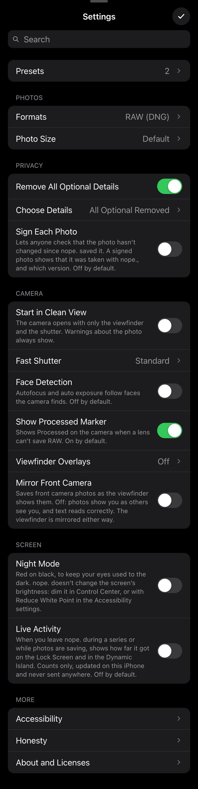
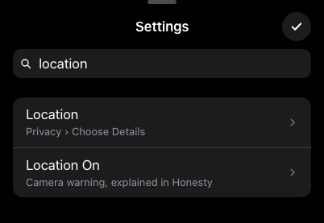
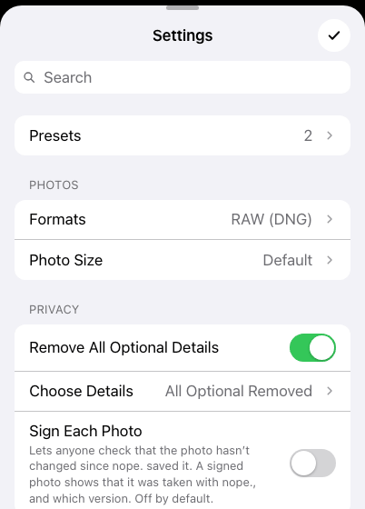
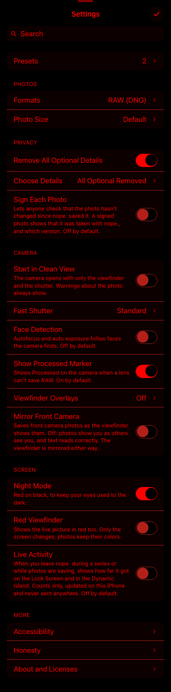
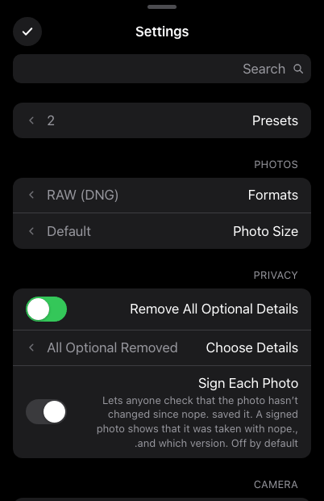
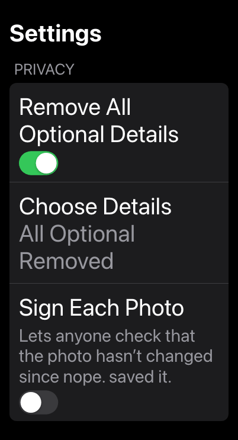
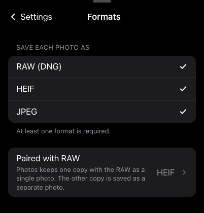
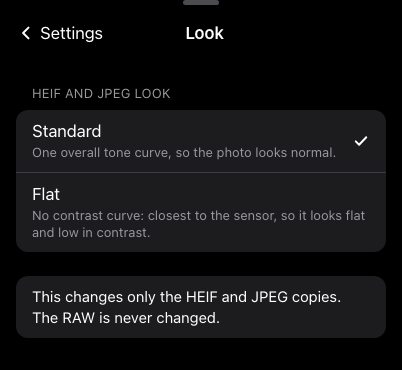
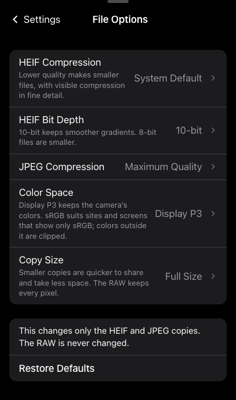
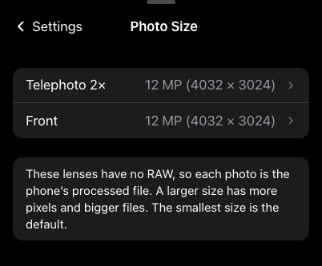
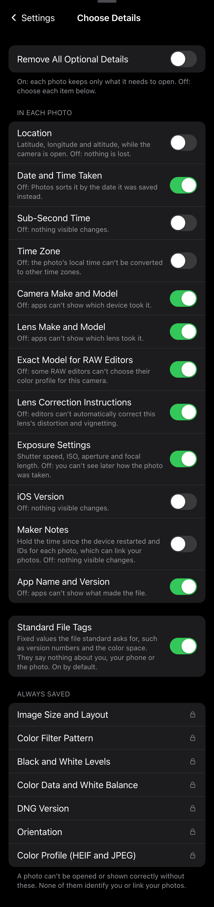
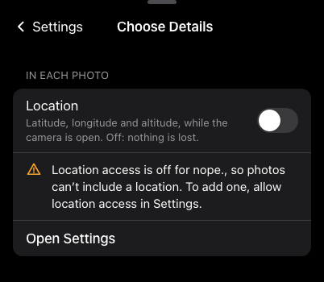

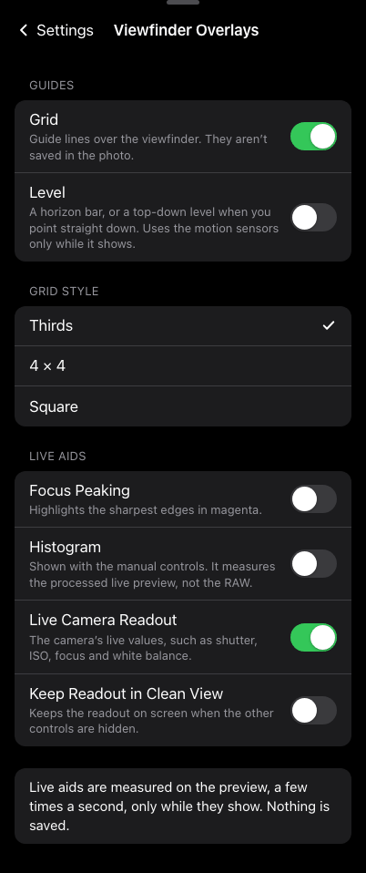